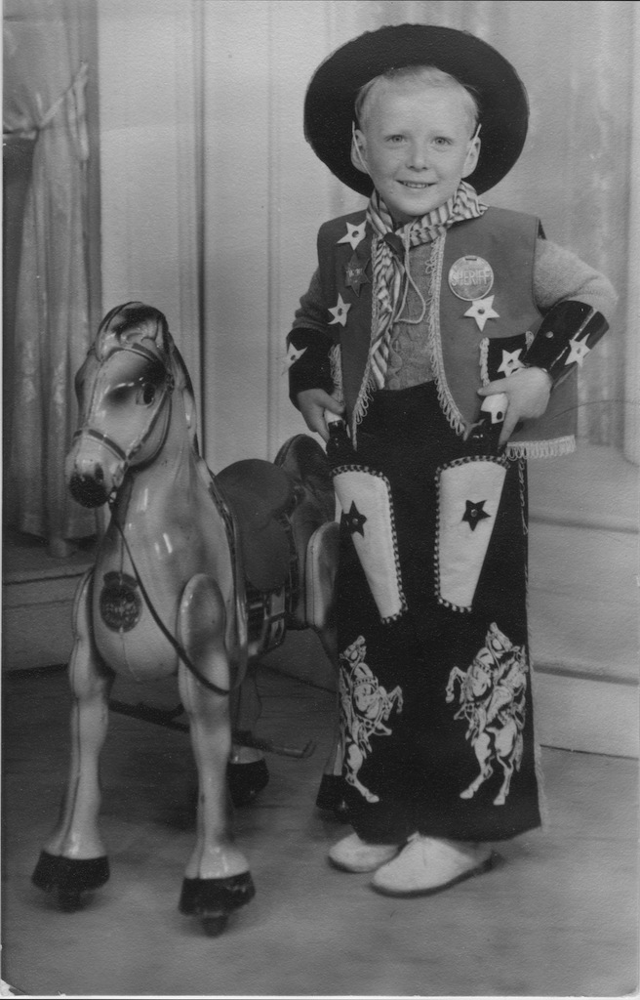

Some people seem able to recall events very early in their lives. For me, my earliest memories are from when I was about five, although it is difficult to know if they are my memories or stories told to me by my parents. I can't place the memories in order, but they all occur when we were living in Cheshunt, in a maisonette (two stories above a single story flat). One of these memories is my first day at school. My Mother was very protective and really didn't want me to go to school, where she couldn't 'protect' me. I think that I should have started school when I was four and a half (since I would have been five during that school year), but I was five and a half when I did. She didn't want me to mix with 'rough' children, so she kept me at home. That may explain why all the other starters, bar one, were crying. So a little girl (who was also not crying) and I were sat together. I must have made some other friends, since I can also remember going to someone's birthday party. Also, that maisonette had lino tiles, at least on the lower floor. We had two mice in a cage, which would regularly escape and run under the sofa. So with the handle of a broom we could make them slide across the floor into someone's waiting hands.
It must have been September 1953 that I started school and so another memory comes from June that year when Queen Elizabeth II was crowned. On the day we went to my Grandmother's house in Edmonton to watch the event on TV. She was one of the few people around who had a TV and the room was quite full of family and neighbours, with the curtains drawn. Or perhaps I only remember it being talked about and seeing a photo of the TV screen in the darkness.
Probably an earlier memory associated with my Grandmother's house in Alpha Road involves a banana. It must have been earlier since I have an image of sitting in a highchair when my Aunt Vera gave me a banana and I burst into tears! You have to remember that during the years after the Second World War we still had food rationing and many food types were simply unavailable. So this was the first time that I'd seen a banana and I probably didn't know what to do with it. However, I've liked bananas ever since.
A few years later, but still at my Grandmother's house in Edmonton I can recall my desire to be a cowboy. My favourite characters were Gene Autry and Tex Ritter. I can't remember how I got to know about them, but can only assume that I saw them on my Nan's TV. This photo was taken at a photo studio/shop, I think in Fore Street, Edmonton. People didn't generally have their own camera at that time.
One recollection is my play acting of being shot and 'playing dead' (for some odd reason). I would stage a gun battle in the hall and end up laying 'dead' on the rug (no fitted carpets in those days). My Dad would pick up my floppy body and lay me on the settee. I suppose at that time in my Nan's house I had no other children with whom to play, since we were living in Cheshunt, some 40 minutes drive away.